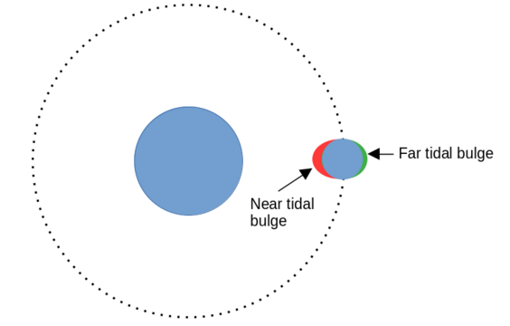
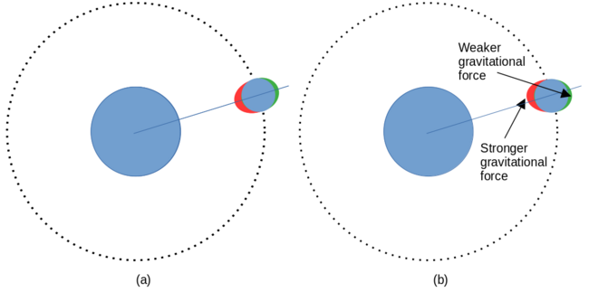
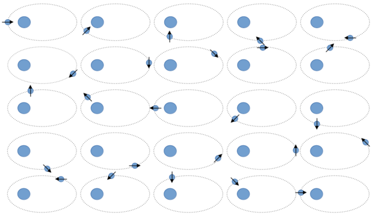

Why we only see one side of the moon -- the odd phenomenon of tidal locking
 In the science-fiction novel A Closed and Common Orbit by
Becky Chambers, an interesting feature of one of the inhabited planets
is that it is "tidally locked" to its sun. Because the planet has a day the
same length as its year, it always presents one face to its sun.
The planet
is permanently dark and cold on one hemisphere, brutally hot on the other,
and has only a small inhabitable zone between the two regions.
In the science-fiction novel A Closed and Common Orbit by
Becky Chambers, an interesting feature of one of the inhabited planets
is that it is "tidally locked" to its sun. Because the planet has a day the
same length as its year, it always presents one face to its sun.
The planet
is permanently dark and cold on one hemisphere, brutally hot on the other,
and has only a small inhabitable zone between the two regions.
It's interesting to speculate how life might survive in such an environment but, in fact, there is an example of the tidal locking phenomenon much closer to home: Earth's moon shows only one face to the Earth; the "dark side" was completely unknown until lunar exploration became feasible.
The moon has a period of rotation -- its "day" -- that is the same as its orbital period -- its "year". It isn't true that the moon isn't rotating: it's rotating in synchrony with its orbit.
Tidal locking is actually more subtle than it first appears. It turns out that it isn't exactly the case that the moon shows only one face to the Earth -- in fact, we see a few degrees more of the Moon than it first seems. In addition, there are forms of tidal locking in which the orbital and rotational times are not equal. For example, the planet Mercury orbits the Sun almost exactly twice for each three of its rotations. I'll try to illustrate that later, but it's somewhat fiddly to diagram.
Tidal locking tends to be explained badly. It's actually a very complex phenomenon when studied at the level of astrophysics; I've tried to present an explanation here that offers a reasonable compromise between accuracy and comprehensibility.
Tidal forces and tidal bulges
The term "tidal" originates, of course, from Earth's tides, although there don't need to be ocean tides, or even water, for tidal locking to develop. Tidal locking arises from forces that we call "tidal" on Earth, but the Earth's tides aren't a useful illustration here -- we're really concerned with what happens to the orbiting body, rather than its "stationary" (primary) counterpart. For most of this article, I will use the tidal locking of the Moon by the Earth as an example. As we'll see, however, the phenomenon is quite widespread.
Tidal forces arise from the gravitational attraction between the Moon and the Earth or, in fact, between any two orbiting bodies. The effect of gravity is to cause a "tidal bulge" on the side of the Moon that is nearest the Earth. Matter is drawn towards the Earth, causing a "bulge". This drawing up of material towards the Earth I shall refer to as the near tidal bulge. Of course, tides on Earth are primarily movements of water. There's no free water on the Moon, so the tidal bulge is small -- in all my diagrams I have enormously overstated it, in the interests of clarity. And, of course, it is a bulge of solid rock, not of water.
As well as the near tidal bulge, there may also be a far tidal bulge. This is caused by the effect of "centripetal" forces on the substance of the Moon. On the Earth, it is the presence of both near and far tidal bulges that leads to most coastal regions experiencing two tides a day, rather than just one. On a waterless body like the Moon, neither of the tidal bulges will cause any discernible, gross effect on the surface. So it isn't particular useful to talk about the number of tides on the Moon.
The diagram below shows how the effect of the tidal bulges is to elongate a spherical orbiting body along the radius of its orbit.

The effect of gravity on tidal bulges
We've seen how the combined effects of gravity and "centripetal" forces cause an orbiting body to bulge (slightly) along its orbital radius. Now we need to consider how this results in tidal locking.
Figure (a) below shows the situation where the tidal bulges are aligned with the radius of the Moon's orbit. In practice, the alignment will always be very close indeed to this for any orbiting body, whether it's tidally locked or not. But consider a situation where the orbiting body is not tidally locked, and is therefore rotating more rapidly than its orbital period. This can lead to the situation shown in (b) -- but bear in mind that I have hugely exaggerated both the bulges and the degree of rotation.

In (b), as in (a), gravity and "centripetal" forces will tend to pull the material of the Moon so that the tidal bulges are aligned with the orbital radius. At the same time, however, inertia keeps the Moon's substance moving in its direction of rotation. This inertia acts tangentially, that is, the substance of the Moon tends to keep moving at right angles to a line between the tidal bulges.
So we have a situation where inertia is trying to deflect the tidal bulges in the direction of the Moon's rotation, and gravity is trying to pull them towards the Earth.
Gravity will act on both the near and the far tidal bulges, but it will be strongest on the near bulge, simply because it's, well, nearer. Gravity cannot realign the tidal bulges with the orbital radius immediately, because deforming millions of tons of rock takes time. So there will always be a balance between gravity's tendency to realign the tidal bulges, and inertia trying to push them in the direction of rotation. In practice, the tidal bulges will come to an equilibrium position just very, very slightly rotated away from the orbital radius.
The unbalanced gravitational forces on the gravitational bulges -- which are not aligned exactly in the direction of the orbital radius -- exert a net torque on the Moon, that acts to slow the Moon's rotation.
The tidal torque will depend on a number of factors, but will only come to zero -- or even close to zero -- once the orbiting body no longer has any rotational component of motion relative to its partner; that is, when it is tidally locked. The torque acting against rotation will be larger, the closer the orbiting bodies are to one another. This is because, with a close orbit, the tidal bulges are further apart, compared to the distance between the bodies. I'll return to the significance of this fact later.
I should point out that tidal locking is a slow process, acting over millions of years. The forces involved are colossal, when compared to human-scale activities; but they're still very tiny on the astronomical scale.
Tidal locking and eccentricity
My description of tidal locking is oversimplified in a number of ways but, most obviously, the effect I've described only applies to a near-circular orbit. Most orbits are elliptical, with varying degrees of eccentricity.
When an orbit has a low level of eccentricity, that is, when it's nearly circular, then the effect of eccentricity is to perturb the tidal locking, without necessarily disrupting it. Earth's moon, in fact, is not always aligned in the same way with respect to the Earth. As the orbital speed of the Moon varies -- as it invariably will as the distance to the Earth changes -- then the Moon rotates relative to the Earth, by just a few degrees in each orbit. This is why the "dark side" of the Moon is not actually a hemisphere -- it is a little less than a full hemisphere, because of the orbital perturbation in tidal locking.
With higher levels of eccentricity, tidal locking of the Earth-Moon sort might be impossible. This situation can give rise to a phenomenon known as spin-orbit resonance. Here, the orbital period and the rotational period form a simple ratio other than 1:1. For example, the planet Mercury orbits the Sun such that it has three "days" for every two "years". I've tried to illustrate this in the rather crude diagram below, which is not even remotely to scale. The diagram is intended to be read left-to-right and top-to-bottom, like English text.

I've drawn an arrow through "Mercury" to indicate its angle of rotation. When Mercury is close to the Sun, then the forces that give rise to tidal locking are at their strongest. At these times, Mercury turns one face towards the Sun for an extended period. However, it isn't always the same side -- Mercury doesn't have a "dark side", as seen from the Sun.
Seen from the Sun, Mercury first will present one face whilst it's at the close part of its orbit. As Mercury moves away, it will appear to rotate, such that when it approaches the Sun again, its other face will be facing the Sun. It seems that spin-orbit resonance of this kind is common in our Solar System, between the planets and their moons.
Remaining oddities
Angular momentum. If the effect of tidal locking forces is to slow the rotation of an orbiting body, what happens to the angular momentum? That is, where does the kinetic energy of rotation go? It appears that, as the rotation slows down, the orbital distance increases. Consequently, energy is conserved, because of the increased potential energy in the system. However, if the orbital distance increases, the strength of the tidal locking forces will decrease. Presumably, in those planets and moons where we see tidal locking, the reduction in locking forces that accompanies the reduction in rotational rate is not sufficient to break the lock.
Can similar-sized bodies be tidally locked? Throughout this article, I've assumed that a comparatively small astronomical body is in orbit around a very much larger primary. As a result, the primary can be deemed "stationary", for the purpose of considering forces acting on the orbiting body. The centre of gravity of the overall two-body system is in the centre of the primary. In practice, however, when two bodies are in an orbital relationship, there is rarely one "stationary" and one "orbiting" body. The two bodies both orbit around a common centre of gravity, which lies somewhere on the line between their centres.
Can tidal locking take effect when the orbiting bodies are both in motion with respect to one another? The answer must be "yes", because the Moon does not really orbit the Earth -- both orbit one another. However, the motion of the Moon is the more orbit-like than that of the Earth, because it is much smaller. So this doesn't really answer the question.
However, Pluto and its moon Charon are of roughly equal size, and orbit one another as a binary system. They, too, are tidally locked -- in this case they are both tidally locked, each to the other.
What about non-orbiting bodies? It's worth considering whether tidal locking can affect astronomical bodies that are not in orbit around one another. After all, the planets in our solar system are moving with respect to one another, as well as to the Sun. To the best of my knowledge, it is unknown whether non-orbiting bodies can be tidally locked. The relationship between Earth and Venus is tantalizing -- when Venus and Earth are closest, we always see the same face of Venus. This hints that some kind of tidal locking is affecting the rotation of Venus, but nobody knows for sure. It would be an odd coincidence if there weren't some reason why Venus behaves as it does; but it's a big universe, and coincidences abound.